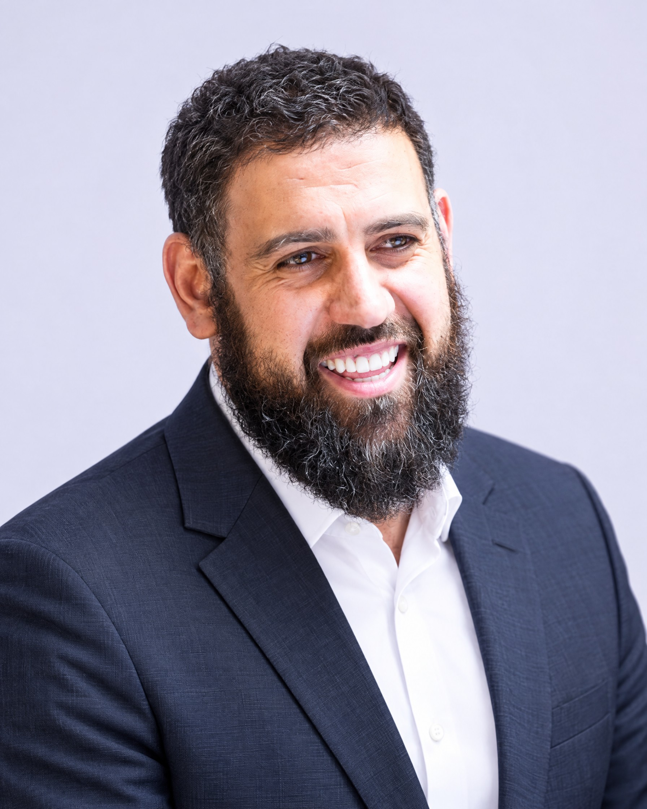
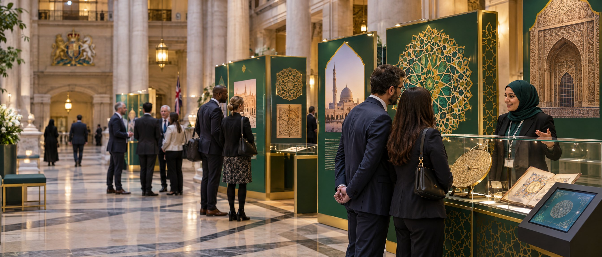
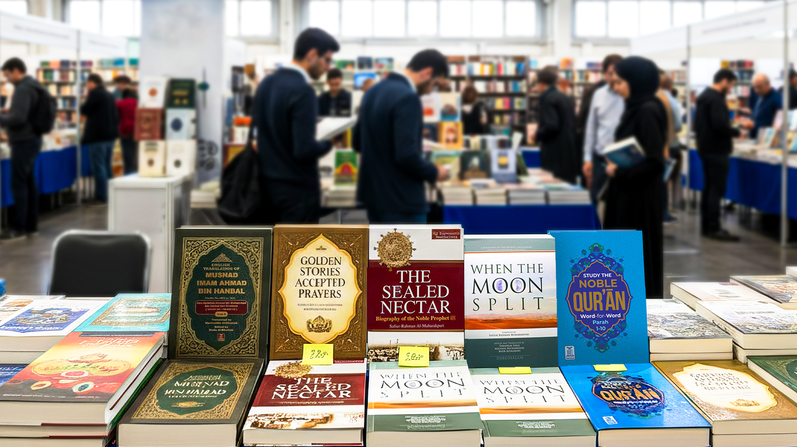
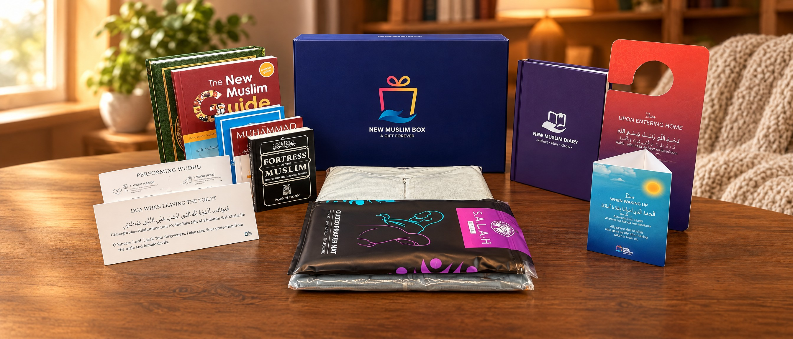
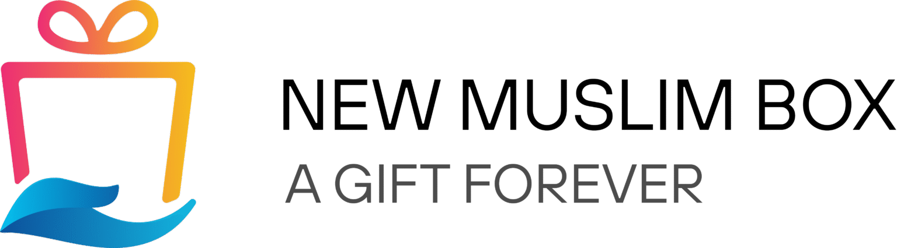
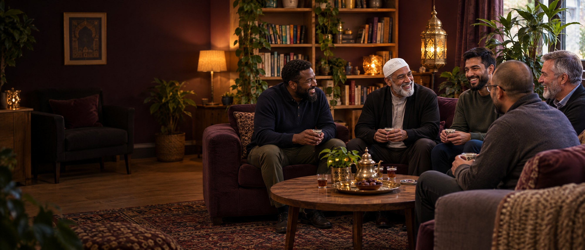

A Wholistic
Da’wa Cycle.
New MuslimCENTRE
Support at the start. Belonging for life.
Dear Stakeholders, Partners, and Friends,
Since 2022, our responsibility has been to be there for every new Muslim beyond the shahada. The declaration of faith is a beautiful moment; building a new way of life is where the journey begins.
Our mission is to support every new Muslim’s well-being and early development. Our vision is an interconnected ecosystem of care across the West, helping people build confidence, consistency, and belonging.
This report shares our progress and future plans, shaped by four years of listening to our community.
We are grateful to our founders, team, and stakeholders. Together, we are scaling our boxes, expanding local hubs, developing a helpline, and mapping community growth.
Thank you for helping us welcome, protect, and nurture our community’s future.

The declaration of faith is a beautiful moment; building a new way of life is where the journey begins.
Providing a variety of services within the Muslim and non‑Muslim community in the UK to promote a better understanding of Islam.
Working towards an ecosystem of care and development for new Muslims through a variety of solutions.
Since 2008, Discover Islam has provided services across the UK to mosques, universities and public schools. We have even hosted exhibitions in highly secured government buildings such as the Ministry of Justice.
Since 2022, New Muslim Centre has provided services to new Muslims to support their well-being and development after the shahada.
For 18+ years we have assessed our environment and responded to the need in the UK for a better understanding of Islam. Following that, we supplemented this with services to support new Muslims in their well-being and development.
What follows reflects the national impact we have made within the Muslim and non‑Muslim community to tackle these needs.
Knowledge changes everything.
Since 2008, our presenters have brought Islam to life for pupils across the UK, in classrooms and on mosque visits. Curriculum-aligned and scholar-reviewed.
It was a great learning experience! The children were extremely engaged.

Promoting understanding through engagement.
Interactive, fully mobile exhibitions for mosques, universities and public spaces, even highly secured government buildings such as the Ministry of Justice.
Very welcoming and calming environment. Our host spoke beautifully and answered the questions wonderfully.

The message, shared with clarity.
Free, scholar-approved guides on the questions people ask most, from Jesus in Islam to the hijab, for events, schools and street outreach.

A welcome that lasts.
A welcome gift at a defining moment. We have delivered 10,000 packs to new Muslims across the UK, USA, Canada, New Zealand and Australia.

Receiving the New Muslim Box at my shahada was a turning point. It felt like a massive global community was standing right behind me.

Belonging, well-being and growth.
What began as one social space in 2022 is now a network of hubs across six UK communities, offering courses, events and friendship.
The Well-being Centre became my sanctuary… it gave me the sense of belonging I desperately needed.
Faith brought to life.
Launched in 2026, our first experiential programme took new Muslims to Makkah and Madinah, learning wudu, salah and du’a where faith began.
Going on the Umrah trip completely transformed my faith. Seeing the history come alive… built a deep, unshakeable confidence in my identity.
Every journey needs people behind it.
Every visit, exhibition, booklet and box is made possible by people who give their time, skills and support.
7 Bridges Place, Parsons Green, London SW6 4HW
Registered Charity No. 1146212
مسارات متكاملة للتعريف بالإسلام، وتقديم الموارد التعليمية، ومساندة المسلم الجديد في بداية رحلته.
التعريف بالإسلام والتعليم والتواصل المجتمعي
كتيّب تعريفي للمؤسسات والشركاء المحتملين
نعمل على تقديم الإسلام بصورة واضحة وأصيلة، وتوفير موارد وخدمات تساعد المساجد والمدارس والمجتمعات على التعلم والتواصل.
الترحيب بالمسلم الجديد وتوفير الموارد والخدمات التي تساعده في بداية رحلته، مع تطوير مسارات للتوجيه والإرشاد.
التعريف بالإسلام من خلال الزيارات المدرسية، والمعارض، والمطبوعات، والموارد التعليمية، والمحاضرات.
تتكامل هذه المسارات لتصل المعرفة إلى الناس، وتوفر دعماً عملياً لمن يبدأ رحلته مع الإسلام.
هذه الأرقام تعكس العمل المتراكم عبر مسيرة المؤسسة، وليست أرقاماً سنوية.
تقديم محتوى تعليمي يساعد الطلاب على فهم الإسلام.
مساحات للحوار والتعرّف المباشر والتواصل مع المجتمع.
كتيبات ومواد تعريفية سهلة الاستخدام والتوزيع.
دعم المؤسسات والمتطوعين بالمعرفة والموارد المناسبة.
موارد يمكن الوصول إليها عبر رمز QR.
تساعد الزيارات المدرسية الطلاب والمعلمين على التعرّف إلى الإسلام في بيئة تعليمية تفاعلية، مع إتاحة المجال للأسئلة والحوار المحترم.
لقاء مباشر يتيح للطلاب طرح الأسئلة وفهم التنوع في المجتمع.
عروض تعليمية وموارد تساعد على تقديم المعلومات بوضوح وموضوعية.
الهدف هو تعزيز المعرفة، وتشجيع الحوار البنّاء، ودعم التفاهم بين المجتمعات.
تتيح المواد المطبوعة والرقمية للناس مواصلة التعلّم بعد الزيارة أو المعرض، كما تساعد المساجد والمؤسسات على توفير مصادر تعريفية موثوقة.
مواد مرئية تساعد على عرض موضوعات إسلامية بصورة مبسطة.
رموز QR تتيح الوصول إلى شرح صوتي أو محتوى رقمي مرتبط بالمطوية.
مواد تعريفية يمكن توزيعها في المساجد والفعاليات والأماكن المجتمعية.
حزمة ترحيبية تساعد المسلم الجديد على بدء رحلته، وتوفر له مواد أساسية للتعلّم والعبادة.
تُقدّم الحزم للمساجد للمساعدة في استقبال المسلمين الجدد وتزويدهم بموارد أولية.
القرآن الكريم، كتب تعريفية، ملصقات للأدعية، مواد إرشادية، ملابس للصلاة، سجادة صلاة تعليمية، ماء زمزم، مطويات ومفكرة.
تُسهم الهدية في ربط التعريف بالإسلام بالدعم العملي في بداية الرحلة.
يركّز المركز على مساندة المسلم الجديد في بداية رحلته، وتسهيل الوصول إلى الموارد المناسبة وفرص التعلّم والتوجيه.
تعزيز الصلة بالمساجد والجهات الشريكة لتسهيل التعلّم والمشاركة المجتمعية.
تطوير مسارات تساعد المسلم الجديد على طرح أسئلته، ومعرفة الخطوات التالية، والوصول إلى الدعم المناسب.
تمنح المعارض والأيام المفتوحة الزوار فرصة للتعرّف إلى الإسلام من خلال المواد المرئية، والمحادثات، والموارد التعليمية.
تراكمت هذه الخبرة على مدى سنوات العمل، وهي تدعم تطوير تجارب تعريفية مناسبة للمجتمعات والمؤسسات.
زيارة مدرسية أو معرض أو لقاء مجتمعي.
مطبوعات وموارد صوتية ورقمية.
تقديم هدية المسلم الجديد والموارد الأولية.
ربط المسلم الجديد بمسارات التعلّم والإرشاد.
تعاون مستمر مع المساجد والمؤسسات لتوسيع الأثر.
نعمل مع المؤسسات لفهم احتياجاتها، وتحديد الأنشطة المناسبة، وتنفيذ البرامج ومراجعة أثرها.
التعرّف إلى أهداف المؤسسة والجمهور الذي تخدمه.
تحديد الخدمة المناسبة والأدوار المتوقعة.
تقديم البرنامج أو الموارد المتفق عليها.
تبادل الملاحظات وتحديد فرص التطوير.
نسعى إلى بناء شراكات مثمرة مع المساجد والمدارس والمؤسسات المجتمعية، لتوسيع أثرنا وتقديم خدمات متكاملة تخدم المجتمع.